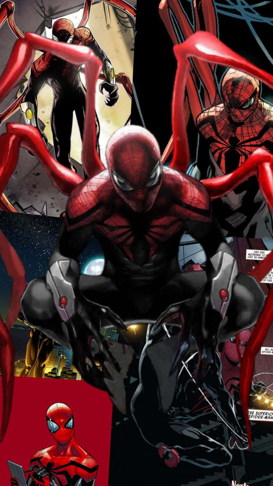

Just when things started to go good for Peter Parker (for once), something bad happened. While visiting a dying Otto Octavius, Peter suddenly had his mind swapped with Otto's, allowing Otto to live and run around in Peter's body. But just before Peter died, Otto discovered the "true" meaning of "With great power comes great responsibility" via Peter's harrowing memories, so he decided to live up to Peter's legacy and become the Superior Spider-Man. Otto did all he could, but his violent way of punishing criminals quickly drew the ire of everyone around, and while he thought he was doing good, in reality he was depleting people of their freedom and allowing some people to get away - eventually forming an army out for revenge. Led by the Green Goblin, the army attacked, and Otto realized his mistakes. When it was revealed that Peter's consciousness existed within his body, Otto sacrificed himself, allowing Peter to be the true Superior Spider-Man.
